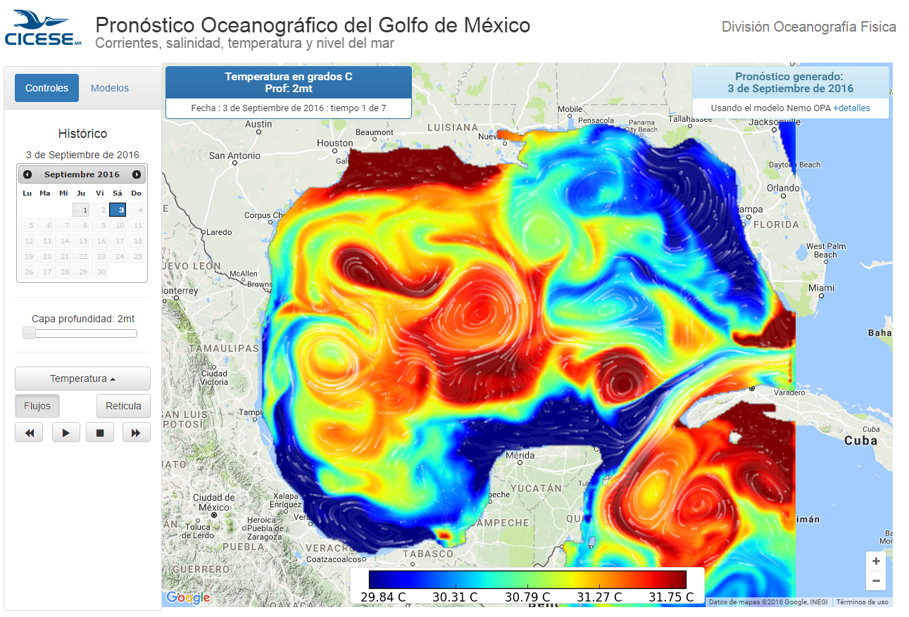

Productos del cluster Chaman¶
Pronostico de circulación oceanica del Golfo de México¶
Diariamente en el cluster chaman se ejecuta una simulación usando el modelo numerico NEMO-OPA de la zona del Golfo de México, este modelo tiene como entradas forzamientos meteorologicos del modelo operacional GFS (Globval Forecast System) y datos del modelo Mercator Global Ocean para los datos de frontera. Cada seis dias se hace un proceso de asimilación con datos del modelo Mercator usando el esquema IAU (Incremental Analysis Update).
Los resultados son mallas con resolución horizontal de 1/24 de grado, 50 niveles de profundidad y siete dias de pronostico. Las variables son: Temperatura, Salinidad, Componentes de velocidad de corrientes U, V y nivel del mar.
Los resultados se publican en: https://sisprogom.cicese.mx
TODO